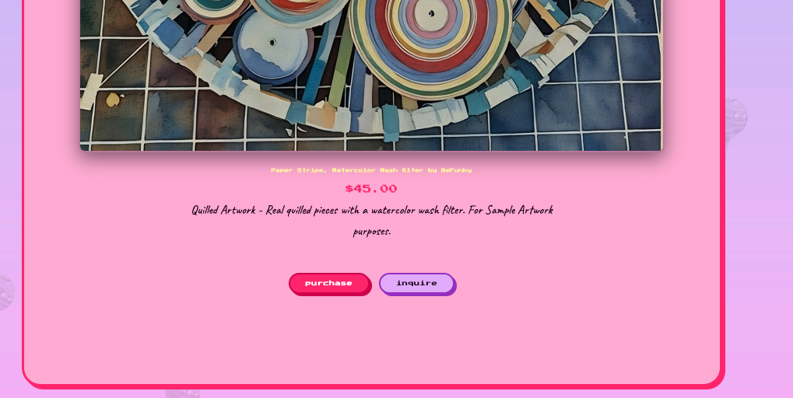

THE PROBLEM
The client is a fine artist who needed a portfolio and eventual shop site. I wanted to give her the ability to update the site herself after handoff. Most of what she will need to change is visual rather than textual: new seasonal graphics, moods, color palettes.
DESIGN DIRECTION
The layout is built off the Web Design Museum's archive of Sanrio.com circa 2000. The client initially wanted to emulate sites from the early 2000s but the desktop-OS aesthetic is now everywhere - draggable windows, taskbars, desktop icons. The Sanrio site reference was a deliberate move away from that. The Web Design Museum is a very extensive source of information so this pivot was not difficult.
This case study page is using the same pixel and handwritten font pairing system as well as the colors used in the overall design system of the site in question.
WHAT'S CUSTOMIZABLE WITHOUT TOUCHING CODE
When the client is an artist, one needs to understand that they have moods, seasonal and creative eras that shift constantly. I started by building the initial design around her current style, and used PHP to move visual decisions to the Customizer, so she can make the changes as she pleases.
- Colors — 5-color palette via color pickers
- Typography — a curated dropdown of 3 pre-paired fonts.
- Backgrounds — page background color, plus header/footer image uploads
- Wallpaper system — Embossed / Outline / Off, backed by 6 uploadable charm images with fallback defaults
- Falling charm animation — 10 uploadable charm images, independent min/max size controls for desktop and mobile, driven by actual viewport width
- Site content — artist photo, sample artwork, and bio text, all editable from the Customizer
The falling charm animation (candy-fall.js) isn't just
a visual flourish — it caps concurrent elements to prevent runaway
DOM growth, pauses spawning via the
visibilitychange event when the tab isn't active, and
includes a failsafe timeout in case the CSS
animationend event never fires.
ARTWORK MANAGEMENT
Artwork is a custom post type with ACF fields for medium, description, "for sale" status, and price — so adding a new piece is a standard WordPress editing flow, not a code change.
SHOP: EMPTY VS. POPULATED STATE
The Shop page is conditional on whether any artwork has been marked "for sale" in the admin. Flip that checkbox and add a price — no code — and the page updates itself.
PURCHASE VS. INQUIRE
Each artwork page shows two calls to action once a price is set: Purchase, for buying the piece as shown, and Inquire, for anything custom — a color variation, a size change, a different palette. This mirrors how a working artist actually sells: not every sale is "buy exactly what's on the screen."

WHY THIS MATTERS
A client-facing WordPress build is only as good as what happens after handoff. This project was an exercise in anticipating every point where a non-technical client would otherwise need to call the developer back — and turning it into a field she can just fill in herself.